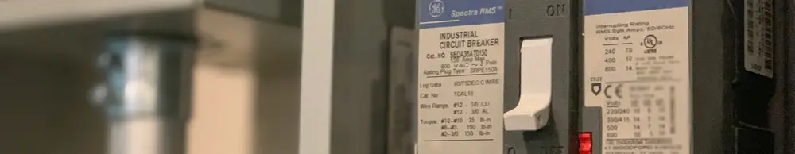

Yang Pertama Kali Harus Dilakukan Ketika Ada Orang yang Tersengat Listrik

Teman-teman, siapa aja nih yang pernah merasakan kesetrum? Mulai dari kesetrum saat menghubungkan perangkat elektronik ke listrik rumah, hingga mungkin kesetrum karena tanpa sengaja memegang kabel yang terbuka. Itu semua perlu ditangani dengan hati-hati ya, karena bisa berbahaya.
Kesetrum bisa terjadi di berbagai tempat dengan berbagai detail kejadian. Bila kejadian kesetrum ini terjadi di pabrik besar atau kantor, langkah yang perlu dilakukan bisa jadi berbeda. Oleh karenanya, dimanapun kita berada, keselamatan perlu benar-benar diperhatikan.
Bila kesetrum ini terjadi di dalam rumah, ada hal yang dapat kita lakukan untuk meminimalkan dampaknya, baik dalam artian mengurangi potensi luka akibat sengatan arus listrik atau bahkan mengurangi kemungkinan jumlah korban yang bisa terdampak.
Kejadian Orang Meninggal Karena Menolong Orang Kesetrum
Mas Tukang ingat, beberapa tahun yang lalu, di suatu daerah di Daerah Istimewa Yogyakarta, beberapa orang meninggal karena berusaha menyelamatkan satu orang yang kesetrum. Hal ini terjadi karena satu orang berusaha menarik orang yang sedang kesetrum. Namun sayang, jumlah korban malah bertambah karena hal ini. Oleh karenanya, mari kita lebih berhati-hati, ya!
Ada Orang Kesetrum? Cukup Matikan MCB
Lantas, apakah yang perlu dilakukan bila ada salah satu anggota keluarga kita kesetrum di rumah? Hal pertama yang dapat kita lakukan adalah segera lari secepat mungkin ke arah circuit breaker (MCB) dan mematikan listrik rumah. MCB ini biasa berada di ruang tamu rumah, ya. Semakin cepat kita bertindak, kemungkinan buruk akibat kesetrum semakin bisa dihindarkan. Langkah ini cocok untuk diterapkan bila kita berada di rumah, dimana MCB pada umumnya bisa dijangkau dengan mudah.
Sebagai catatan, bila ada anggota keluarga yang kesetrum, jangan berusaha menariknya dengan kedua tangan kita. Hal ini disebabkan oleh, listrik dari orang tersebut bisa mengalir ke tubuh kita. Akibatnya, kita juga ikut terkena aliran listrik. Dengan kata lain, menarik orang yang sedang kesetrum dapat berpotensi untuk menambah jumlah korban, karena kita juga bisa jadi ikut kesetrum. Jadi, langkah ini tidak disarankan, ya.
Video Singkat Tips Menyelamatkan Orang Kesetrum
Oleh karenanya, kita harus berhati-hati agar tidak kesetrum di rumah. Namun, bila ada anggota keluarga yang kesetrum, jangan ragu untuk segera mematikan MCB untuk memutus aliran listrik. Video singkat tentang pertolongan pertama saat ada yang kesetrum di rumah dapat ditonton dibawah ini. Semoga bermanfaat dan jangan lupa untuk selalu mengutamakan keselamatan, ya!